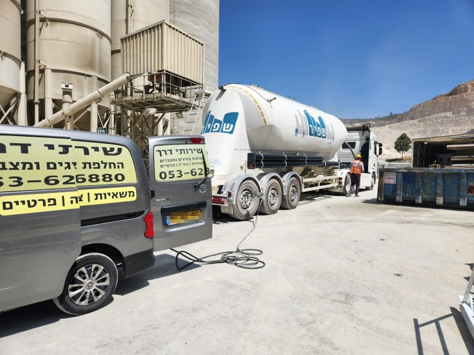
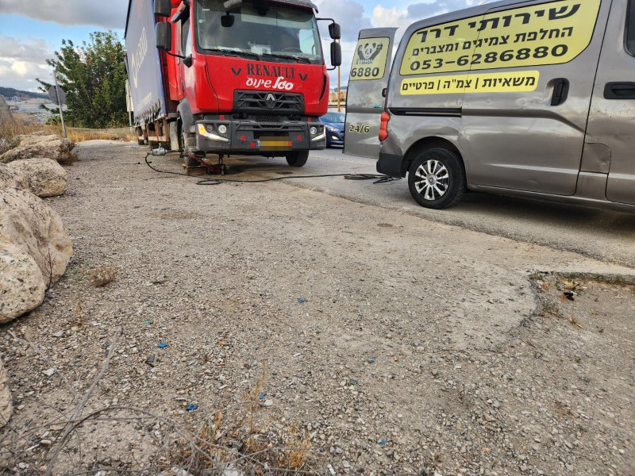

תיקון תקרים והחלפת גלגלים
שירות שמיועד למצבים שבהם צריך מענה מהיר בשטח, בחניה, ליד הבית, בעסק או באמצע הדרך. המטרה היא לטפל בתקלה באופן מדויק, לפי מצב הצמיג וההתאמה לסוג הרכב.
כשיש תקלה בגלגל, כשצריך החלפת צמיג בשטח, כשמשאית עומדת, כשאוטובוס תקוע, או כשהרכב הפרטי פשוט לא יכול להמשיך עוד מטר אחד, צריך פתרון שמגיע אליכם ולא להפך. אלי פנצ'ריה ניידת נותן מענה מקצועי, ישיר ומדויק באזור ירושלים והסביבה, עם שירות שמותאם לרכב פרטי, לרכבים חשמליים, לרכבים מסחריים, למשאיות, לאוטובוסים ולכל מי שמחפש תגובה מהירה עם ציוד מתאים וניסיון מעשי.
זהו דף נחיתה שנבנה עבור עסק שעובד בשטח האמיתי: כבישים עירוניים, אזורי תעשייה, חניונים, אתרי עבודה, צירים בין-עירוניים ומוקדי פעילות שבהם זמן הוא עניין קריטי. הגישה כאן אינה גנרית. היא מבוססת על שירות נייד שמכיר את אזור ירושלים, יודע להתמודד עם מגוון סוגי רכבים, ומחזיק בתפיסה מקצועית שנשענת על זמינות, אחריות ויעילות.
למי שמחפש פנצ’ריה ניידת בירושלים, מדובר בשירות שיודע לתת מענה אמיתי בשטח ולא רק הבטחה על המסך.

אלי פנצ'ריה ניידת מציג קו שירות שמתאים למי שלא מחפש רק החלפת גלגל, אלא מענה שלם יותר: הגעה למיקום, אבחון מהיר, ציוד מתאים, התאמה לסוג הרכב, ויכולת לעבוד גם מול צרכים מורכבים יותר של רכבים כבדים, צי רכב, הסעות, הובלה ותפעול.
באזור כמו ירושלים והסביבה, לא כל תקלה נראית אותו דבר. יש מקרים של תקר פשוט ליד הבית, ויש מקרים שבהם רכב נתקע בדרך לעבודה, משאית עוצרת באזור תעשייה, אוטובוס נדרש לטיפול מיידי, או רכב חשמלי זקוק לפתרון שמתבצע בזהירות ובידע מתאים. כאן בדיוק נכנס היתרון של שירות נייד מקצועי: לא לגרור את הלקוח להמתנה מיותרת, אלא להביא את הפתרון עד למקום שבו הבעיה קרתה.
העסק פועל באזור ירושלים, מודיעין, בית שמש, ים המלח, מעלה אדומים וכל מחוז ירושלים, עם מענה שמתאים גם ללקוחות פרטיים וגם ללקוחות עסקיים. השילוב בין היכרות עם האזור, ניסיון עם סוגי רכבים שונים, והבנה של דחיפות בשטח, יוצר שירות שנועד לא רק "להגיע", אלא להגיע נכון.
כי מדובר באזור עם עומסי תנועה, עליות, אזורי תעשייה, כבישים בין-עירוניים, מוקדי פעילות מרוחקים ואתרי עבודה שבהם כל עיכוב משפיע על סדר היום. פנצ'ריה ניידת באזור כזה צריכה להיות לא רק זמינה, אלא גם מאורגנת, מנוסה ומוכנה למגוון תרחישים.
אלי פנצ'ריה ניידת נותן מענה שמבוסס על חשיבה תפעולית אמיתית: להגיע מצויד, להבין את סוג התקלה, ולהחזיר את הרכב לפעילות בצורה שקולה, מקצועית ויעילה ככל האפשר.
השירות של אלי פנצ'ריה ניידת בנוי סביב הצורך האמיתי של הנהג או בעל העסק בשטח: לקבל פתרון במקום, בלי להסתבך ובלי לאבד זמן יקר.
שירות שמיועד למצבים שבהם צריך מענה מהיר בשטח, בחניה, ליד הבית, בעסק או באמצע הדרך. המטרה היא לטפל בתקלה באופן מדויק, לפי מצב הצמיג וההתאמה לסוג הרכב.
כאשר יש צורך בצמיג חדש ולא רק בתיקון נקודתי, השירות הנייד חוסך זמן והתעסקות ומאפשר לקבל מענה ישירות במיקום שבו הרכב נמצא, בלי להיכנס למסלול ארוך של עיכובים.
רכבים חשמליים דורשים תשומת לב, היכרות וזהירות. השירות מתאים גם למקרים כאלה, מתוך הבנה שהטיפול חייב להתבצע באופן אחראי ומתאים למאפייני הרכב.
לרכב כבד אין פריבילגיה להיתקע לאורך זמן. שירות למשאיות מחייב ציוד, ניסיון והבנה של צורכי עבודה, הובלה ותפעול. זהו חלק מרכזי מהשירות של העסק.
כאשר אוטובוס או רכב הסעות תקוע, המשמעות היא לעיתים עיכוב של מערך שלם. לכן השירות מותאם גם לצרכים כאלה, עם מענה בשטח בגישה מקצועית ועניינית.
לצד תחום הצמיגים, ניתן מענה גם למצבים שבהם צריך החלפת מצבר ושירות משלים שמחזיר את הרכב לפעילות, במיוחד כשיש צורך בפתרון מהיר במקום אחד.

אחד היתרונות המשמעותיים של אלי פנצ'ריה ניידת הוא היכולת לתת מענה רחב, ולא להישאר רק במסגרת של תקר רגיל ברכב פרטי.
השירות מתאים לנהגים פרטיים, לרכבים חשמליים, לרכבים מסחריים, למשאיות, לאוטובוסים ולמקרים שבהם יש צורך בתגובה מקצועית בשטח תפעולי או לאורך ציר תנועה. בעסק כזה, ההתמחות במשאיות ואוטובוסים אינה רק תוספת נחמדה, אלא חלק חשוב מהזהות המקצועית. זה אומר היכרות עם צרכים של רכבים כבדים יותר, עם דחיפות גבוהה יותר, ועם מצבים שבהם תקלה אחת משפיעה על לו"ז, על עובדים, על הובלה, על קווים ועל תפעול שוטף.
עבור לקוחות פרטיים, המשמעות היא שקט וביטחון שיש מי שמגיע. עבור בעלי עסקים, המשמעות היא שירות שמבין מהו מחירו של זמן תקוע. ועבור מי שנמצא באזור ירושלים והסביבה, המשמעות היא מענה מקומי שקרוב לאזורי הפעילות המרכזיים ויודע לעבוד במרחב בצורה יעילה.
השירות של אלי פנצ'ריה ניידת מכוון לאזור ירושלים והסביבה, עם מענה גם לאזורים מרכזיים נוספים שבהם יש תנועה, פעילות עסקית, צירי הובלה ולקוחות פרטיים שצריכים פתרון אמיתי בשטח.
בין אזורי השירות המרכזיים ניתן למצוא את ירושלים, מודיעין, בית שמש, ים המלח, מעלה אדומים, וכן את כל מחוז ירושלים והסביבה. המשמעות היא לא רק רשימת מקומות, אלא יכולת לעבוד בתוך מרחב גאוגרפי פעיל שבו יש שילוב בין שכונות עירוניות, כניסות ויציאות מהעיר, אזורי תעשייה, חניונים, אזורי מסחר וצירים בין-עירוניים.
כאשר מדובר בפנצ'ריה ניידת, הכיסוי האזורי חשוב מאוד. הלקוח לא מחפש רק שם עסק, אלא מישהו שיכול באמת להגיע. לכן הדגש כאן הוא על שירות בנוי נכון לאזור, עם חשיבה פרקטית ויכולת לתת מענה במקום שבו צריך אותו.
כדי להפוך את הבחירה בפנצ'ריה ניידת לברורה יותר, ריכזנו תשובות לשאלות שמעניינות נהגים פרטיים, נהגי משאיות, מפעילי הסעות ובעלי עסקים.
השירות מתאים לרכבים פרטיים, רכבים מסחריים, רכבים חשמליים, משאיות, אוטובוסים וסוגים נוספים של כלי רכב שזקוקים למענה מקצועי בתחום הצמיגים והשירות הנייד.
כן. השירות נועד לתת מענה גם בכביש, בחניון, באזור תעשייה, באתר עבודה ובמיקומים שבהם הרכב אינו יכול להמשיך בנסיעה ללא טיפול במקום.
כן. השירות ניתן בירושלים ובאזורי הסביבה המרכזיים, כולל מודיעין, בית שמש, ים המלח, מעלה אדומים וכל מחוז ירושלים, בהתאם למיקום ולזמינות.
משום ששירות נייד חוסך זמן, מצמצם התעסקות ומאפשר לקבל מענה במקום שבו התקלה קרתה. במצבים רבים זהו הפתרון הנוח, הישיר והיעיל יותר.
שירותי פנצ'ריה ניידת בירושלים והסביבה לרכב פרטי, רכב חשמלי, משאיות ואוטובוסים, עם גישה מקצועית שמבינה שזמן, בטיחות ויכולת הגעה הם חלק מהשירות עצמו.